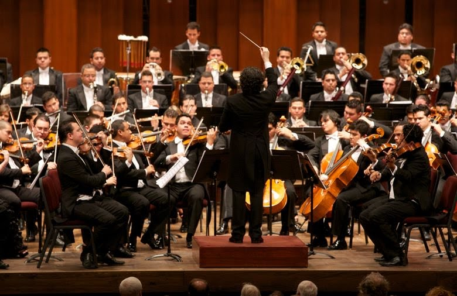
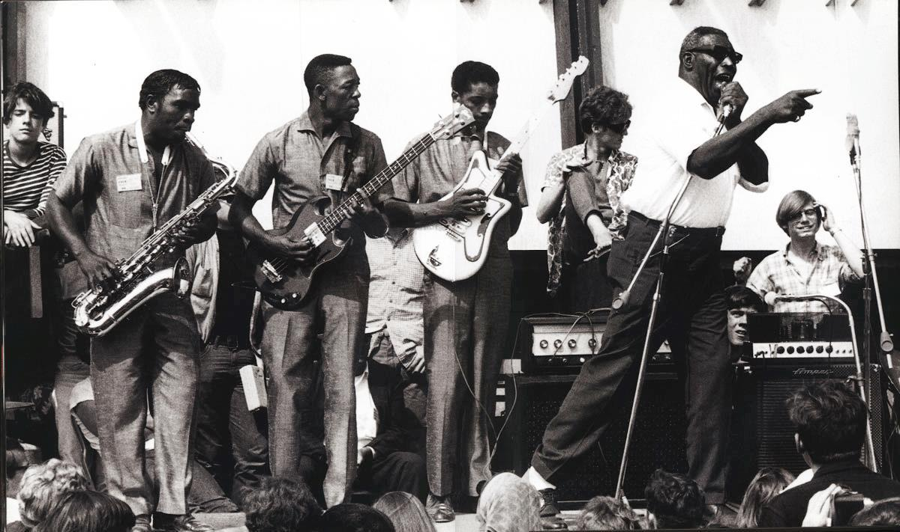

Tipos de Genero de Musica
Musica clasica

El inicio de las melodías fue precisamente con este tipo de música. Hoy en día se ha convertido en un clásico entre los clásicos. La trayectoria comenzó en el siglo XI y sigue hasta ahora, pero su periodo más relevante abarca 400 años desde mediados del siglo XVI hasta principios del siglo XX.
Se trata de un género musical basado en las tradiciones musicales litúrgicas y seculares de occidente, especialmente en Europa. Y los intérpretes o autores más relevantes fueron: Wagner, Bach, Mozart, Beethoven y Chopin.
Jazz
Nace a finales del siglo XIX en EEUU y resulta uno de los géneros musicales más difíciles de definir ya que cuenta con infinidad de subgéneros. Así pues, el jazz no conforma una identidad tan sólida como el de otros tipos de música. Lo que sí podemos asegurar es que se trata de un estilo musical procedente de la cultura afroamericana que surgió sobre la década de los 20.
Podemos decir que el jazz se caracteriza principalmente por: la improvisación, el tratamiento del ritmo, la utilización de notas a contratiempo y síncopas.
Soul
El Soul es una combinación de ritmos del doo-wop y del Góspel. Se desarrolló en los EEUU a finales de la década de 1950. Mientras el gospel era uno de los tipos de música más alegres, el soul resulta más lento y profundo.
Caracterizado por el uso de las palmas y los movimientos corporales de los cantantes. Además se trata de un tipo de música que suele contar tanto con solistas como con coros.
Blues

Se caracteriza por tener una estructura de doce compases cuyo origen se remonta a las comunidades afroamericanas de Estados Unidos de principios del siglo XX. Desde entonces se han desarrollado muchos estilos, algunos en pequeñas ciudades del sur de EEUU y otros en grandes ciudades como Chicago o Nueva Orleans.
Flamenco
Se trata de la música tradicional en nuestro país. Nace al sur de España y está relacionada directamente con la cultura gitana.
Sus raíces se desarrollan gracias al mestizaje cultural de Andalucía, donde destacaron civilizaciones como: oriundos, musulmanes, gitanos, castellanos y judíos. Todos ellos, propiciaron su distintivo sonido en el que la voz y la guitarra tienen el máximo protagonismo.
Salsa
La salsa surge de la síntesis y combinación de los sonidos cubanos y caribeños, así como del jazz y otros ritmos estadounidenses.
Este tipo de música abarca varios subgéneros y cuenta con estilos diferenciados según el país, podemos notar una clara diferencia entre: Puerto Rico, Venezuela, o Colombia. Pero en todo caso se caracteriza por emplear mucha percusión: maracas, los timbales, el güiro cubano, el cencerro jamaicano o el bongó.
Reggaeton
Se originó en Puerto Rico a finales de los años noventa. Está influenciado por el hip hop y la música latinoamericana y caribeña. Emplean ritmos y letras pegadizas y repetitivas, haciendo un sonido muy bailable. Los artistas de este género más conocidos son: Daddy Yankee, Don Omar y Arcángel.
Tango
Si bien se suele asociar a Argentina, lo cierto es que la zona de influencia de este género musical es el Río de la Plata, por lo que involucra también a algunas zonas de Uruguay.
El paso del tiempo fue generando diferentes ramas dando lugar a diferentes etapas históricas: La Guardia Nueva, La Edad de Oro… No obstante, todas sus melodías y letras tienen temas comunes relacionados con los deseos profundos e internos del ser humano.
Elementos de la Musica
Los elementos fundamentales de la música suelen ser siempre tres, aunque su concepción y su aplicación concreta bien puede variar de una cultura a otra. Estos elementos son:
Melodía. Se refiere al conjunto de sonidos que, dentro de un mismo ámbito sonoro específico, suenen sucesivamente, o sea, uno después de otro, y que, al percibirse como una unidad completa de sonido, poseen identidad y significado propio. En ella tienen cabida los silencios, sirviendo de pausas en el “discurso” de la melodía, e incluso puede haber dos o más melodías simultáneas, conformando lo que se llama un “contrapunto”.
Armonía. En este caso nos referimos al efecto que resulta al combinar dos o más notas musicales, y que puede llegar a ser más o menos grato al oído (más o menos armónico). Un conjunto de sonidos concordantes constituye un acorde, y se reproducen todos al mismo tiempo.
Ritmo. Este elemento es el que vincula a la música con el tiempo, permitiéndole transmitir cierta emoción dependiendo de la vertiginosidad, placidez o las formas con que los anteriores elementos se manifiesten. Estrictamente hablando, el ritmo no es más que los patrones existentes en la sucesión de los sonidos, la combinación específica de figuras y silencios que compone la música.